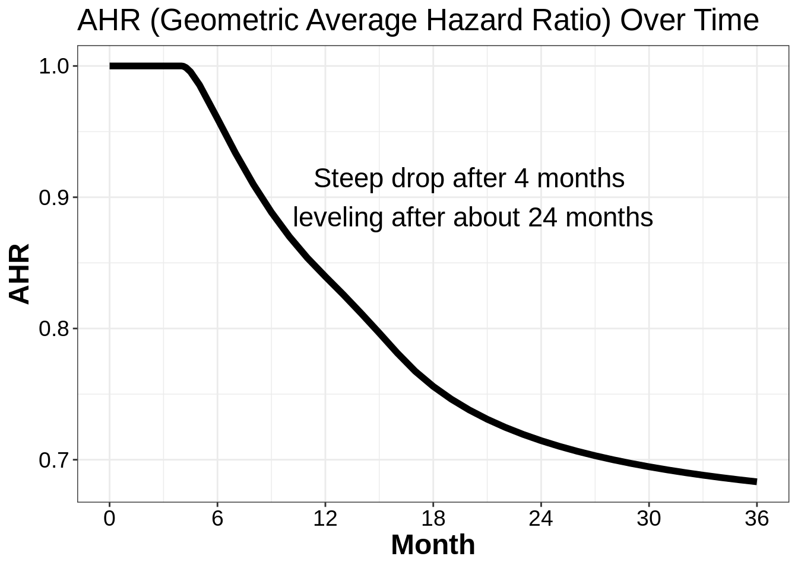

3 Average hazard ratio
We consider designs for non-proportional hazards in this chapter. Because of its importance for regulatory applications, we focus here on the logrank tests. Others tests will be considered in Chapter 5.
3.1 Piecewise model
To model a time-varying hazard ratio, we consider a model where failure rates for experimental and control groups are piecewise constant. Since this model can use arbitrarily small piecewise intervals, this is not really a restriction. In concept, this is an extension of the piecewise proportional hazards model of Lachin and Foulkes (1986a). Suppose the piecewise constant changes at the change points \(0 = t_0 < t_1 < \cdots < t_M \le \infty\), and for each individual interval \((t_{m-1}, t_m]\) for \(m = 1, \ldots, M\), the hazard ratio is a constant \(HR_m\) (experimental:control) , i.e., \[ \text{hazard ratio} = \left\{ \begin{array}{ll} HR_1 & \text{for } t \in (0, t_1] \\ HR_2 & \text{for } t \in (t_1, t_2] \\ \vdots \\ HR_M & \text{for } t \in (t_{M-1}, t_M] \\ \end{array} \right.. \] For any \(m = 1, \ldots, M\), \[ HR_m = \lambda_{1,m} / \lambda_{0,m}, \] where the subscript \(i\) indexes the treatment group with \(i = 0\) for control arm and \(i=1\) for treatment arm. As in Lachin and Foulkes (1986a), we will also assume an exponential dropout rate \(\eta_{i,m}\) for treatment arm \(i=0,1, m=1,\ldots,M\). While not necessary, in software implementation in the gsDesign2 and gsdmvn packages, we simplified to \(\eta_{0,m}=\eta_{1,m}=\eta_m, m=1,\ldots,M\).
We will denote \[\begin{equation} \tag{3.1} \lambda_{i,m} = e^{\gamma_{i, m}}. \end{equation}\]
By using the delta method, we get the asymptotic distribution of \(\widehat\lambda_{i,m}\) as \[\begin{equation} \tag{3.2} \log(\widehat\lambda_{i,m}) \overset{\cdot}{\sim} \text{Normal} \left( \log(\lambda_{i,m}), \; 1/d_{i,m} \right), \;\; \forall i \in \{0, 1\} \end{equation}\]
With the estimation of \(\{\lambda_{i,m}\}_{i=0,1 \text{ and } m = 1, \ldots, M}\), it is not complicated to get the estimation and the asymptotic distribution of \(HR_m\), which is defined as \(HR_m = \lambda_{1,m}/\lambda_{0,m}\). In this chapter, we are interested in the logarithm of \(HR_m\) and denote it as \(\beta_m\). Recall that \[\begin{equation} \tag{3.3} \beta_m \triangleq \log(HR_m) = \log\left( \frac{\lambda_{1,m}}{\lambda_{0,m}} \right) = \log(\lambda_{1,m}) - \log(\lambda_{0,m}). \end{equation}\] For both \(\lambda_{1,m}\) and \(\lambda_{0,m}\) above, we know they can be estimated by \[ \widehat\lambda_{i,m} = \frac{d_{i,m}}{T_{i, m}} \;\; i \in\{0, 1\} \] where \(d_{0,m}, d_{1,m}\) are number of events in \((t_{m-1}, t_m]\) for group \(0,1\), respectively.
By plugging the asymptotic distribution of \(\{\lambda_{0, m}, \lambda_{1,m}\}\) in equation (3.2) into (3.3), we can derive the asymptotic distribution of \(\beta_m\): \[\begin{equation} \tag{3.4} \widehat\beta_m \overset{\cdot}{\sim} \text{Normal} \left( \beta_m, \frac{1}{D_{0m}} + \frac{1}{D_{1m}} \right) \;\; \forall m = 1,\ldots, M . \end{equation}\]
3.2 Average hazard ratio
In this section, we define the average hazard ratio (AHR) and use it to derive the asymptotic normal distribution of the logrank test. This is actually a weighted geometric mean of the hazard ratio in piecewise intervals we defined above. Defining \(\beta_m=\log(\lambda_{1,m}/\lambda_{0,m})= \log(\lambda_{1,m})-\log(\lambda_{0,m}), m=1,\ldots,M\), we define the logarithm of AHR as a weighted sum of the individual log hazard ratios: \[ \beta = \sum_{m=1}^M w_m \log(HR_m)=\sum_{m=1}^M w_m \beta_m=\sum_{m=1}^Mw_m(\log(\lambda_{1,m})-\log(\lambda_{0,m})). \] For \(w_m\) we propose inverse variance weighting which is based on expected number of events expected in each treatment group in \((t_{m-1},t_m],\) \(m=1,\ldots,M\). We denote \(d_{i,m}, T_{i,m},\) \(i=0,1,\) \(m=1,\ldots,M\) the observed events and total time at risk in treatment group \(i\) during period \((t_{m-1},t_m]\). Thus, for \(m=1,\ldots,M\) we have
\[w_m=\frac{(1/E(d_{0,m})+1/E(d_{1,m}))^{-1}}{\sum_{j=1}^M (1/E(d_{0,j})+1/E(d_{1,j}))^{-1}}.\] The corresponding estimate of \(\log(\lambda_{i,m}), i=0,1, m=1,\ldots,M\) is \[\hat{\gamma}_{i,m}=\log\hat\lambda_{i,m} = \log(d_{i,m}/T_{i,m})\] which is asymptotically normal with variance \[\text{Var}(\hat\gamma_{i,m})=1/E(d_{i,m})\] and variance estimate \[\widehat{\text{Var}}(\hat\gamma_{i,m})=1/d_{i,m}.\] We propose to estimate \(\beta\) using estimated weights under the piecewise model. \[\begin{equation} \tag{3.5} \tilde\beta = \sum_{m=1}^M \hat{w}_m \left(\hat\gamma_{1,m} - \hat\gamma_{0,m}\right) \end{equation}\]
For the selection of weight \(\hat{w}_m,\) \(m = 1, \ldots, M\), we use inverse variance weighting \[ \hat{w}_m = \left. \left( \frac{1}{1/d_{0,m}+1/d_{1,m}} \right)^{-1} \right/ \sum_{i=1}^M \left( \frac{1}{1/d_{0,i}+1/d_{1,i}} \right)^{-1}. \] By plugging the above weights into equation (3.5), \(\beta\) can be estimated as \[ \tilde\beta = \frac{ \sum_{m=1}^M \left( \frac{1}{d_{0,m}}+\frac{1}{d_{1,m}} \right)^{-1} \left( \log(d_{1,m} / T_{1,m}) - \log(d_{0,m}/T_{0,m}) \right) }{ \sum_{m=1}^M \left( \frac{1}{d_{0,m}}+\frac{1}{d_{1,m}} \right)^{-1} }. \] The corresponding variance estimate is: \[ \widehat{\hbox{Var}}(\tilde\beta) = \left(\sum_{m=1}^M(1/d_{0,m} + 1/d_{1,m})^{-1}\right)^{-1}. \]
By plugging the asymptotic distribution of \(\hat\beta_m\) in equation (3.4), one gets the asymptotic distribution of \(\tilde\beta\) as
\[ \tilde\beta \overset{\cdot}{\sim} \hbox{Normal}(\beta, \; \mathcal{I}^{-1}), \] where \[\mathcal{I} = \sum_{m = 1}^M \left( \frac{1}{E(d_{0,m})} + \frac{1}{E(d_{1,m})} \right)^{-1}.\]
Not shown here is that this is the asymptotic distribution of the logrank test under the piecewise model which follows by the results of Schoenfeld (1981).
The details for computing \(E(d_{i,m}),\), \(i=0,1\), \(m=1,\ldots,M\) under the piecewise model are demonstrated in a vignette in the gsDesign2 package.
These computations form the basis for the asymptotic approximations for power and sample size implemented in the gsdmvn package using the functions gsdmvn::gs_power_ahr() and gsdmvn::gs_design_ahr().
3.3 Examples
In this section, we introduce 7 examples to help reader
- learn more about AHR by visualization;
- learn the calculation of AHR by using the R package gsDesign2 and gsdmvn.
3.3.1 Example 1
In this example, we assume the enrollment rate is a constant with \(12\) month targeted enrollment. And we further assume the dropout rate is exponential, i.e., \(0.001\) per month. Besides, the failure rate is assumed as exponential with the median of \(15\) months. The hazard ratio is assumed as \(1\) for the first 4 month, and \(0.6\) thereafter.
To calculate the AHR, we first use gsDesign2::AHR().
# calculate the AHR
xx <- gsDesign2::AHR(
# the enrollment rate is a constant with $12$ month targeted enrollment
enrollRates = tibble::tibble(Stratum = "All", duration = 12, rate = 100 / 12),
failRates = tibble::tibble(
Stratum = "All",
# failure rate is assumed as exponential with the median of 15 months
failRate = log(2) / 15,
# hazard ratio is assumed as 1 for the first 4 month, and 0.6 thereafter.
hr = c(1, 0.6),
duration = c(4, 100),
# dropout rate is exponential, i.e., 0.001 per month
dropoutRate = rep(0.001, 2)
),
# total follow-up from start of enrollment to data cutoff
totalDuration = c(.001, 4, 4.1, 4.25, 4.5, 5, seq(6, 36, 1)),
# ratio of experimental to control randomization
ratio = 1
)Its AHR plot can be found below, where its AHR steeps drop after \(4\) months and leveling after about \(24\) months.
# plot the AHR curve
ggplot(xx, aes(x = Time, y = AHR) ) +
geom_line(size = 2) +
ggtitle("AHR (Geometric Average Hazard Ratio) Over Time") +
scale_x_continuous(breaks = seq(0, 36, 6)) +
ylab("AHR") +
xlab("Month") +
annotate(geom = "text", x = 20, y = .9, size = 6,
label = "Steep drop after 4 months\n leveling after about 24 months") +
theme_bw() +
theme(
axis.text = element_text(size = 14, colour = "black"),
axis.title = element_text(size = 18, face = "bold"),
title = element_text(size = 16)
) Then, we are interested to figure out the expected events per \(100\) enrolled and find out that we need \(35\)-\(40\) months until \(65\)%-\(70\)% have events.
# plot AHR
ggplot(xx %>%
group_by(Time) %>%
summarize(Events = sum(Events)),
aes(x = Time, y = Events)) +
geom_line(size = 2) +
scale_y_continuous(breaks = seq(0, 100, 10)) +
annotate(geom = "text", x = 28, y = 20, size = 6,
label = "Need 35-40 months until\n 65%-70% have events") +
scale_x_continuous(breaks = seq(0, 42, 6)) +
ggtitle("Expected Events per 100 Enrolled") +
theme_bw() +
theme(
axis.text = element_text(size = 18, colour = "black"),
axis.title = element_text(size = 18, face = "bold"),
title = element_text(size = 18)
) +
xlab("Month")3.3.2 Example 2
In this example, we assume there are \(332\) events and investigate the correlation between AHR and power.
For AHR, we are interested in the range from \(0.6\) to \(1\) with intervals of \(0.02\).
For power, it can be calculated by gsDesign::nEvents().
The correlation between AHR and power can be found in the following figure.
ggplot(tibble(# interested in the range from 0.6 to 1 with intervals of 0.02
AHR = seq(.6, 1, .02),
# power can be calculated by gsDesign::nEvents()
Power = gsDesign::nEvents(# assume there are 332 events
n = 332,
# if beta = NULL and n = number of events,
# then power is computed instead of events required
beta = NULL,
hr = seq(.6, 1, .02))),
aes(x = AHR, y = Power)) +
geom_line(size = 2) +
scale_y_continuous(labels = scales::percent, breaks = seq(0, 1, .2)) +
ggtitle("Power by AHR, 332 Events, alpha=0.025, 1-sided") +
annotate(geom = "text", x = .7, y = .3, size = 6,
label = "Steep power decrease\n with increasing AHR") +
annotate(geom = "text", x = .88, y = .83, size = 6,
label = "Ensure follow-up sufficient\n to capture meaningful AHR") +
theme_bw() +
theme(
axis.text = element_text(size = 18, colour = "black"),
axis.title = element_text(size = 18, face = "bold"),
title = element_text(size = 16)
)3.3.3 Example 3
In this example, we discuss the group sequential design with spending bounds.
And we will show how to calculate the interim timing, final timing, effect size, and information by gsDesign2::AHR().
We assume the analysis is conducted after \(12, 20, 28, 36\) months and the sample size is \(500\).
we further assume the enrollment rate is a constant with \(12\) month targeted enrollment.
And we further assume the dropout rate is exponential, i.e., \(0.001\) per month.
Besides, the failure rate is assumed as exponential with the median of \(15\) months.
The hazard ratio is assumed as \(1\) for the first \(4\) month, and \(0.6\) thereafter.
library(survival)
library(dplyr)
library(simtrial)
library(gsDesign)
library(gsDesign2)
library(gsdmvn)
# assume the analysis is conducted after 12, 20, 28, 36 months
analysisTimes <- c(12, 20, 28, 36)
# sample size is 500
sampleSize <- 500
# enrollment rates
enrollRates <- tibble(Stratum = "All",
# assume the enrollment rate is a constant with
# 12 month targeted enrollment.
duration = 12,
rate = sampleSize / 12)
# failure rates
failRates <- tibble(
Stratum = "All",
# failure rate is assumed as exponential with the median of 15 months.
failRate = log(2) / 15,
# hazard ratio is assumed as $1$ for the first 4 month, and $0.6$ thereafter.
hr = c(1, .6),
duration = c(4, 100),
# dropout rate is exponential, i.e., 0.001 per month
dropoutRate = 0.001
)Given the above setting, we can calculate the interim timing, final timing, effect size, and information by gsDesign2::AHR().
ahr <- gsDesign2::AHR(
enrollRates = enrollRates,
failRates = failRates,
totalDuration = analysisTimes,
ratio = 1
) %>% mutate(timing = c(info0[1:3] / info0[4], 1))
ahr %>%
gt() %>%
fmt_number(col = 2, decimals = 2) %>%
fmt_number(col = 3:6, decimals = 2) | Time | AHR | Events | info | info0 | timing |
|---|---|---|---|---|---|
| 12 | 0.84 | 107.39 | 26.37 | 26.85 | 0.32 |
| 20 | 0.74 | 207.90 | 50.67 | 51.97 | 0.63 |
| 28 | 0.70 | 279.10 | 68.23 | 69.78 | 0.84 |
| 36 | 0.68 | 331.29 | 81.38 | 82.82 | 1.00 |
3.3.4 Example 4
In this example, we compare proportional hazard with non-proportional hazard, regarding of the sample size and crossing probability.
In this example, we consider the one-sided design.
We will discuss the other designs in the next few sections, including symmetric design in Section 3.3.5, asymmetric design in Section 3.3.6 and design with interims at specified times in Section 3.3.7.
For the calculation of proportional hazard, we use R function gsDesign::gsSurv().
For the calculation of non-proportional hazard, we use R function gsdmvn::gs_design_ahr().
First, we calculate the sample size and crossing probability under proportional hazard. And we find the sample size is \(444\) with \(297\) events. The crossing probabilities at the first, second, third and final interim analysis are \(0.0289, 0.4999, 0.7916, 0.9000\) under \(H_1\).
# Derive Group Sequential Design
PH1sided <- gsDesign::gsSurv(
# Number of analyses (interim + final)
k = 4,
# use this for 1-sided testing
test.type = 1,
# 1-sided Type I error
alpha = 0.025,
# Type II error (1 - power)
beta = 0.1,
# Information fraction for interim
timing = ahr$timing,
# O'Brien-Fleming spending approximation
sfu = sfLDOF,
# Piecewise control failure rates
lambdaC = failRates$failRate,
# Used final analysis AHR
hr = ahr$AHR[4],
# Piecewise exponential dropout rates
eta = failRates$dropoutRate,
# Relative enrollment
gamma = enrollRates$rate,
# Duration of piecewise enrollment rates
R = enrollRates$duration,
# Duration of piecewise failure rates (K-1)
S = failRates$duration[1],
# Study duration
T = max(analysisTimes),
# Minimum follow-up
minfup = max(analysisTimes) - sum(enrollRates$duration),
# Experimental:Control randomization ratio
ratio = 1
)
gsBoundSummary(PH1sided) %>% gt()| Analysis | Value | Efficacy |
|---|---|---|
| IA 1: 32% | Z | 3.7670 |
| N: 444 | p (1-sided) | 0.0001 |
| Events: 97 | ~HR at bound | 0.4636 |
| Month: 13 | P(Cross) if HR=1 | 0.0001 |
| P(Cross) if HR=0.68 | 0.0289 | |
| IA 2: 63% | Z | 2.6020 |
| N: 444 | p (1-sided) | 0.0046 |
| Events: 186 | ~HR at bound | 0.6828 |
| Month: 21 | P(Cross) if HR=1 | 0.0047 |
| P(Cross) if HR=0.68 | 0.4999 | |
| IA 3: 84% | Z | 2.2209 |
| N: 444 | p (1-sided) | 0.0132 |
| Events: 250 | ~HR at bound | 0.7549 |
| Month: 28 | P(Cross) if HR=1 | 0.0146 |
| P(Cross) if HR=0.68 | 0.7916 | |
| Final | Z | 2.0453 |
| N: 444 | p (1-sided) | 0.0204 |
| Events: 297 | ~HR at bound | 0.7885 |
| Month: 36 | P(Cross) if HR=1 | 0.0250 |
| P(Cross) if HR=0.68 | 0.9000 |
Second, we calculate the sample size and crossing probability under non-proportional hazard. And we find the sample size is \(465\) with \(308\) events (you will want to round up events and sample size). The crossing probabilities at the first, second, third and final interim analysis are \(0.0019, 0.3024, 0.7329, 0.9000\) under \(H_1\).
library(gsdmvn)
# Spending function setup
NPH1sided <- gs_design_ahr(
enrollRates = enrollRates,
failRates = failRates,
ratio = 1, alpha = .025, beta = 0.1,
# Information fraction not required (but available!)
analysisTimes = analysisTimes,
# Function to enable spending bound
upper = gs_spending_bound,
# Spending function and parameters used
upar = list(sf = gsDesign::sfLDOF, total_spend = 0.025),
# Lower bound fixed at -infinity
lower = gs_b, # allows input of fixed bound
# With gs_b, just enter values for bounds
lpar = rep(-Inf, 4)
)
NPH1sided$bounds %>%
filter(Bound == "Upper") %>%
gt() %>%
fmt_number(col = c(1,3), decimals = 0) %>%
fmt_number(col=c(4:5, 10:11), decimals = 1) %>%
fmt_number(col=6:7, decimals = 4) %>%
fmt_number(col=8:9, decimals = 3)| Analysis | Bound | Time | N | Events | Z | Probability | AHR | theta | info | info0 |
|---|---|---|---|---|---|---|---|---|---|---|
| 1 | Upper | 12 | 464.3 | 99.7 | 3.7670 | 0.0019 | 0.840 | 0.175 | 24.5 | 24.9 |
| 2 | Upper | 20 | 464.3 | 193.0 | 2.6020 | 0.3024 | 0.738 | 0.304 | 47.0 | 48.3 |
| 3 | Upper | 28 | 464.3 | 259.2 | 2.2209 | 0.7329 | 0.700 | 0.357 | 63.3 | 64.8 |
| 4 | Upper | 36 | 464.3 | 307.6 | 2.0453 | 0.9000 | 0.683 | 0.381 | 75.6 | 76.9 |
Comparing the proportional hazard with non-proportional hazard, we find that
- Interim boundary crossing probability much lower than with proportional hazard bounds.
- Sample size larger than for proportional hazard.
3.3.5 Example 5
In this example, we compare proportional hazard with non-proportional hazard. Here, we consider the symmetric design: \[ \begin{align} f(s_k,\alpha)-f(s_{k-1},\alpha) =& P_0(\{Z_{k}\geq b_{k}(\alpha)\}\cap_{j=1}^{k-1}\{-b_{j}(\alpha)< Z_{j}< b_{j}(\alpha)\}\\ =& P_0(\{Z_{k}\le -b_{k}(\alpha)\}\cap_{j=1}^{k-1}\{-b_{j}(\alpha)< Z_{j}< b_{j}(\alpha)\} \end{align}. \] The common practice is to use binding upper and lower bounds. In this example, we use two one-sided tests for \(\alpha-\)spending.
First, we calculate the sample size and crossing probability under proportional hazard by gsDesign::gsSurv().
And we find the sample size is \(444\) with \(297\) events.
The probabilities to cross the upper boundary at the first, second, third and final interim analysis are \(0.0289, 0.4999, 0.7916, 0.9000\) under \(H_1\).
The probabilities to cross the lower boundary at the first, second, third and final interim analysis are \(0.0001, 0.0047, 0.0146, 0.0250\) under \(H_0\).
| Analysis | Value | Efficacy | Futility |
|---|---|---|---|
| IA 1: 32% | Z | 3.7670 | -3.7670 |
| N: 444 | p (1-sided) | 0.0001 | 0.0001 |
| Events: 97 | ~HR at bound | 0.4636 | 2.1569 |
| Month: 13 | P(Cross) if HR=1 | 0.0001 | 0.0001 |
| P(Cross) if HR=0.68 | 0.0289 | 0.0000 | |
| IA 2: 63% | Z | 2.6020 | -2.6020 |
| N: 444 | p (1-sided) | 0.0046 | 0.0046 |
| Events: 186 | ~HR at bound | 0.6828 | 1.4646 |
| Month: 21 | P(Cross) if HR=1 | 0.0047 | 0.0047 |
| P(Cross) if HR=0.68 | 0.4999 | 0.0000 | |
| IA 3: 84% | Z | 2.2209 | -2.2209 |
| N: 444 | p (1-sided) | 0.0132 | 0.0132 |
| Events: 250 | ~HR at bound | 0.7549 | 1.3246 |
| Month: 28 | P(Cross) if HR=1 | 0.0146 | 0.0146 |
| P(Cross) if HR=0.68 | 0.7916 | 0.0000 | |
| Final | Z | 2.0453 | -2.0453 |
| N: 444 | p (1-sided) | 0.0204 | 0.0204 |
| Events: 297 | ~HR at bound | 0.7885 | 1.2682 |
| Month: 36 | P(Cross) if HR=1 | 0.0250 | 0.0250 |
| P(Cross) if HR=0.68 | 0.9000 | 0.0000 |
Second, we calculate the sample size and crossing probability under non-proportional hazard by gsdmvn::gs_design_ahr().
And we find the sample size is \(465\) with \(308\) events (you will want to round up events and sample size).
The probabilities to cross the upper boundaries at the first, second, third and final interim analysis are \(0.0019, 0.3024, 0.7329, 0.9000\) under \(H_1\).
The probabilities to cross the lower boundaries at the first, second, third and final interim analysis are \(0.0000, 0.0000, 0.0000, 0.0000\) under \(H_0\).
library(gsdmvn)
NPHsymmetric <- gsdmvn::gs_design_ahr(
enrollRates = enrollRates,
failRates = failRates,
ratio = 1, alpha = .025, beta = 0.1,
# Information fraction not required (but available!)
analysisTimes = analysisTimes,
# Function to enable spending bound
upper = gs_spending_bound,
lower = gs_spending_bound,
# Spending function and parameters used
upar = list(sf = gsDesign::sfLDOF, total_spend = 0.025),
lpar = list(sf = gsDesign::sfLDOF, total_spend = 0.025),
binding = TRUE, # set lower bound to binding
h1_spending = FALSE
)
NPHsymmetric$bounds %>%
gt() %>%
fmt_number(col = c(1,3), decimals = 0) %>%
fmt_number(col = c(4:5, 10:11), decimals = 1) %>%
fmt_number(col = 6:7, decimals = 4) %>%
fmt_number(col = 8:9, decimals = 3)| Analysis | Bound | Time | N | Events | Z | Probability | AHR | theta | info | info0 |
|---|---|---|---|---|---|---|---|---|---|---|
| 1 | Upper | 12 | 464.3 | 99.7 | 3.7670 | 0.0019 | 0.840 | 0.175 | 24.5 | 24.9 |
| 2 | Upper | 20 | 464.3 | 193.0 | 2.6020 | 0.3024 | 0.738 | 0.304 | 47.0 | 48.3 |
| 3 | Upper | 28 | 464.3 | 259.2 | 2.2209 | 0.7329 | 0.700 | 0.357 | 63.3 | 64.8 |
| 4 | Upper | 36 | 464.3 | 307.6 | 2.0453 | 0.9000 | 0.683 | 0.381 | 75.6 | 76.9 |
| 1 | Lower | 12 | 464.3 | 99.7 | −3.7670 | 0.0000 | 0.840 | 0.175 | 24.5 | 24.9 |
| 2 | Lower | 20 | 464.3 | 193.0 | −2.6020 | 0.0000 | 0.738 | 0.304 | 47.0 | 48.3 |
| 3 | Lower | 28 | 464.3 | 259.2 | −2.2209 | 0.0000 | 0.700 | 0.357 | 63.3 | 64.8 |
| 4 | Lower | 36 | 464.3 | 307.6 | −2.0453 | 0.0000 | 0.683 | 0.381 | 75.6 | 76.9 |
3.3.6 Example 6
In this example, we compare proportional hazard with non-proportional hazard. Here, we consider the asymmetric design. For upper boundary, we use non-binding upper bound with spending function \(f_1(s,\alpha)\). For lower boundary, we use binding lower bound with spending function \(f_2(s,\gamma)\) for some chosen \(0 < \gamma \le 1-\alpha\), where \(\gamma\) is the type II error. The boundaries are set to satisfy \[ \begin{align} f_1(s_k,\alpha)-f_1(s_{k-1},\alpha) & = Pr(\{Z_{k}\geq b_{k}(\alpha)\}\cap_{j=1}^{k-1}\{Z_{j}< b_{j}(\alpha) \;|\; H_0\} )\\ f_2(s_k,\gamma)-f_2(s_{k-1},\gamma) & = Pr(\{Z_{k}< a_{k}(\gamma)\}\cap_{j=1}^{k-1}\{a_{j}(\gamma)\le Z_{j}< b_{j}(\alpha) \;|\; H_1\}) \end{align} \] For the last look, \(K\)-th look, generally, it is set as \(a_K = b_K\).
First, we calculate the sample size and crossing probability under proportional hazard by gsDesign::gsSurv().
And we find the sample size is \(476\) with \(319\) events.
The probabilities to cross the upper boundary at the first, second, third and final interim analysis are \(0.0338, 0.5385, 0.8185, 0.9000\) under \(H_1\).
The probabilities to cross the lower boundary at the first, second, third and final interim analysis are \(0.0143, 0.0393, 0.0687, 0.1000\) under \(H_1\).
# Derive Group Sequential Design
PHasymmetric <- gsDesign::gsSurv(
# Number of analyses (interim + final)
k = 4,
# ONLY CHANGED FROM BEFORE
# non-binding futility bound
test.type = 4,
# 1-sided Type I error
alpha = 0.025,
# Type II error (1 - power)
beta = 0.1,
# Information fraction for interims
timing = ahr$timing,
# O'Brien-Fleming spending approximation
sfu = sfLDOF,
# Hwang-Shih-DeCani futility spending function
sfl = sfHSD,
# Accelerate early spending somewhat
sflpar = -2,
# Piecewise control failure rates
lambdaC = failRates$failRate,
# Alternate hypothesis HR
hr = ahr$AHR[4],
# Piecewise exponential dropout rates
eta = failRates$dropoutRate,
# Relative enrollment
gamma = enrollRates$rate,
# Duration of piecewise enrollment rates
R = enrollRates$duration,
# Duration of piecewise failure rates (K-1)
S = failRates$duration[1],
# Study duration
T = max(analysisTimes),
# Minimum follow-up
minfup = max(analysisTimes) - sum(enrollRates$duration),
# Experimental:Control randomization ratio
ratio = 1)
gsBoundSummary(PHasymmetric) %>% gt()| Analysis | Value | Efficacy | Futility |
|---|---|---|---|
| IA 1: 32% | Z | 3.7670 | -0.2503 |
| N: 476 | p (1-sided) | 0.0001 | 0.5988 |
| Events: 104 | ~HR at bound | 0.4767 | 1.0505 |
| Month: 13 | P(Cross) if HR=1 | 0.0001 | 0.4012 |
| P(Cross) if HR=0.68 | 0.0338 | 0.0143 | |
| IA 2: 63% | Z | 2.6020 | 0.8440 |
| N: 476 | p (1-sided) | 0.0046 | 0.1993 |
| Events: 201 | ~HR at bound | 0.6922 | 0.8875 |
| Month: 21 | P(Cross) if HR=1 | 0.0047 | 0.8103 |
| P(Cross) if HR=0.68 | 0.5385 | 0.0393 | |
| IA 3: 84% | Z | 2.2209 | 1.5151 |
| N: 476 | p (1-sided) | 0.0132 | 0.0649 |
| Events: 269 | ~HR at bound | 0.7626 | 0.8312 |
| Month: 28 | P(Cross) if HR=1 | 0.0144 | 0.9414 |
| P(Cross) if HR=0.68 | 0.8185 | 0.0687 | |
| Final | Z | 2.0453 | 2.0453 |
| N: 476 | p (1-sided) | 0.0204 | 0.0204 |
| Events: 319 | ~HR at bound | 0.7953 | 0.7953 |
| Month: 36 | P(Cross) if HR=1 | 0.0225 | 0.9775 |
| P(Cross) if HR=0.68 | 0.9000 | 0.1000 |
Second, we calculate the sample size and crossing probability under non-proportional hazard by gsdmvn::gs_design_ahr().
And we find the sample size is \(502\) with \(333\) events (you will want to round up events and sample size).
The probabilities to cross the upper boundaries at the first, second, third and final interim analysis are \(0.0021, 0.3318, 0.7660, 0.9000\) under \(H_1\).
The probabilities to cross the lower boundaries at the first, second, third and final interim analysis are \(0.0143, 0.0387, 0.0681, 0.1000\) under \(H_0\).
library(gsdmvn)
NPHasymmetric <- gsdmvn::gs_design_ahr(
enrollRates = enrollRates,
failRates = failRates,
ratio = 1, alpha = .025, beta = 0.1,
# Information fraction not required (but available!)
analysisTimes = analysisTimes,
# Function to enable spending bound
upper = gs_spending_bound,
lower = gs_spending_bound,
# Spending function and parameters used
upar = list(sf = gsDesign::sfLDOF, total_spend = 0.025),
lpar = list(sf = gsDesign::sfHSD, total_spend = .1, param = -2)
)
NPHasymmetric$bounds %>%
gt() %>%
fmt_number(col = c(1,3), decimals = 0) %>%
fmt_number(col = c(4:5, 10:11), decimals = 1) %>%
fmt_number(col = 6:7, decimals = 4) %>%
fmt_number(col = 8:9, decimals = 3)| Analysis | Bound | Time | N | Events | Z | Probability | AHR | theta | info | info0 |
|---|---|---|---|---|---|---|---|---|---|---|
| 1 | Upper | 12 | 501.8 | 107.8 | 3.7670 | 0.0021 | 0.840 | 0.175 | 26.5 | 26.9 |
| 2 | Upper | 20 | 501.8 | 208.6 | 2.6020 | 0.3318 | 0.738 | 0.304 | 50.9 | 52.2 |
| 3 | Upper | 28 | 501.8 | 280.1 | 2.2209 | 0.7660 | 0.700 | 0.357 | 68.5 | 70.0 |
| 4 | Upper | 36 | 501.8 | 332.5 | 2.0453 | 0.9000 | 0.683 | 0.381 | 81.7 | 83.1 |
| 1 | Lower | 12 | 501.8 | 107.8 | −1.2899 | 0.0143 | 0.840 | 0.175 | 26.5 | 26.9 |
| 2 | Lower | 20 | 501.8 | 208.6 | 0.3054 | 0.0387 | 0.738 | 0.304 | 50.9 | 52.2 |
| 3 | Lower | 28 | 501.8 | 280.1 | 1.3340 | 0.0681 | 0.700 | 0.357 | 68.5 | 70.0 |
| 4 | Lower | 36 | 501.8 | 332.5 | 2.0453 | 0.1000 | 0.683 | 0.381 | 81.7 | 83.1 |
3.3.7 Example 7
In this example, we discuss the design with interims at specified times, say, there are futility boundary only at the first interim analysis (look for \(p=0.05\) in the wrong direction) and there are efficacy boundaries only after the first interim.
This is a variation on asymmetric design.
It should be noted that it is not easily done with gsDesign::gsSurv(), and cannot be done (at least not easily) with gsDesign package.
So, we only discuss the implementation of gsdmvn::gs_design_ahr() for design with interims at specified times.
We will use information fraction instead of calendar times of analysis.
NPHskip <- gsdmvn::gs_design_ahr(
enrollRates = enrollRates,
failRates = failRates,
ratio = 1, alpha = .025, beta = 0.1,
# Information fraction not required (but available!)
analysisTimes = analysisTimes,
# Upper spending bound
upper = gs_spending_bound,
upar = list(sf = gsDesign::sfLDOF, total_spend = 0.025),
# Skip first efficacy analysis
test_upper = c(FALSE, TRUE, TRUE, TRUE),
# Spending function and parameters used
lower = gs_b,
lpar = c(qnorm(.05), rep(-Inf, 3))
)
NPHskip$bounds %>%
filter(abs(Z) < Inf) %>% # Throw out infinite bounds
arrange(Analysis) %>% # Arrange by analysis
gt() %>%
fmt_number(columns = c(1,3), decimals = 0) %>%
fmt_number(columns = c(4:5, 10:11), decimals = 1) %>%
fmt_number(columns = 6:7, decimals = 4) %>%
fmt_number(columns = 8:9, decimals = 3)| Analysis | Bound | Time | N | Events | Z | Probability | AHR | theta | info | info0 |
|---|---|---|---|---|---|---|---|---|---|---|
| 1 | Lower | 12 | 467.6 | 100.4 | −1.6449 | 0.0060 | 0.840 | 0.175 | 24.7 | 25.1 |
| 2 | Upper | 20 | 467.6 | 194.4 | 2.5999 | 0.3057 | 0.738 | 0.304 | 47.4 | 48.6 |
| 3 | Upper | 28 | 467.6 | 261.0 | 2.2207 | 0.7359 | 0.700 | 0.357 | 63.8 | 65.3 |
| 4 | Upper | 36 | 467.6 | 309.8 | 2.0452 | 0.9000 | 0.683 | 0.381 | 76.1 | 77.5 |